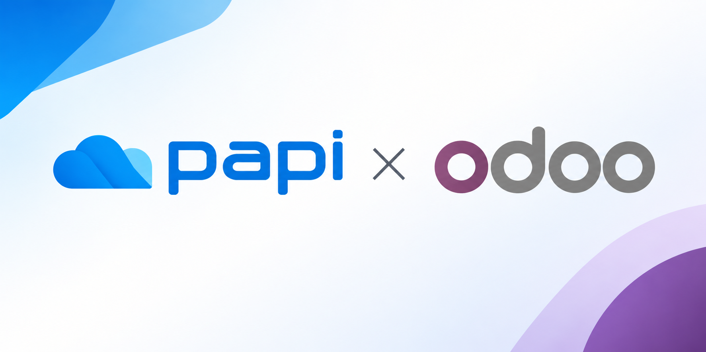

Odoo 17 · 18 · 19 · 20 Community tested MGA 95 automated tests LGPL-3
Une seule intégration, tous les moyens de paiement locaux. MVola, Orange Money, Airtel Money et carte bancaire : encaissez vos clients sur votre site ou vos factures, suivez chaque transaction en temps réel dans votre tableau de bord et exportez vos rapports.
Créer mon compte Papi Voir la démo
papi.mg · Tableau de bord · Documentation · support@papi.mg · +261 32 11 646 78
Papi appears next to the other payment providers of Odoo. Your customers select Papi at checkout, pay on the secure Papi page with the instrument of their choice, and come back to your website. Orders are confirmed automatically once Papi has confirmed the payment.
| Odoo | 17.0, 18.0, 19.0 or 20.0 (one package per version). Tested on Community; Enterprise not tested |
|---|---|
| Hosting | Odoo.sh or on-premise. Odoo Online (SaaS) is not supported: it does not allow third-party modules |
| Python / PostgreSQL | Python 3.10+ and the PostgreSQL version supported by your Odoo; only the standard Odoo dependencies (requests) |
| Odoo apps | account_payment (installed automatically); website_sale for the eCommerce checkout; sale for quotations and sales orders |
| Currency | MGA (Ariary) enabled, with an MGA pricelist for eCommerce; minimum amount 300 MGA |
| Public URL | web.base.url set to your public HTTPS address, so Papi can reach /payment/papi/webhook. Behind a reverse proxy: proxy_mode = True and keep the X-Papi-Signature header |
| Network | Inbound HTTPS to the webhook (no IP filtering); outbound HTTPS (443) to app.papi.mg |
| Papi account | A verified Papi shop with its API key and notification signing secret (sign up) |
payment_papi; the sales-order bridge payment_papi_sale comes with it).| Field | What to enter |
|---|---|
| API key | The key of your Papi shop (one key = one shop). Visible to Odoo administrators only |
| Notification signing secret | The pwhsec_… value used to verify X-Papi-Signature |
| Payment link validity | 1 to 596 hours (default 1 h); the transaction is cancelled once it expires |
| Payment journal | The bank journal that receives the Papi payments, used for reconciliation |
| Countries / currencies | Preset to Madagascar and MGA; empty the country field to offer Papi to customers of any country |
| State | Disabled, Test or Enabled (see the warning above about Test mode) |
| Scenario | Supported |
|---|---|
eCommerce checkout (website_sale) | Yes |
| Invoices paid from the customer portal | Yes |
| Online quotations and standard payment links | Yes |
| "Pay with Papi" button for back-office operators | Yes |
| Multi-company and multi-website | Yes |
| Odoo.sh and on-premise | Yes |
| Odoo Online (SaaS) | No: third-party modules cannot be installed |
| Point of Sale, subscriptions, refunds from Odoo, saved cards | Not in this version |
Acceptez les paiements MVola, Orange Money, Airtel Money et carte bancaire sur votre boutique Odoo et pour vos factures. Module compatible avec Odoo 17, 18, 19 et 20 sur Odoo.sh ou en auto-hébergé ; non disponible sur Odoo Online. Versions : Odoo 17, 18, 19 et 20 (un paquet par version).
Configuration requise : Odoo 17 à 20 sur Odoo.sh ou auto-hébergé ; devise MGA (minimum 300 Ar) ;
URL publique en HTTPS (web.base.url, proxy_mode = True derrière un proxy) ;
sortie HTTPS vers app.papi.mg ; boutique Papi vérifiée avec clé API et secret de signature.
Support : docs.papi.mg · support@papi.mg · papi.mg